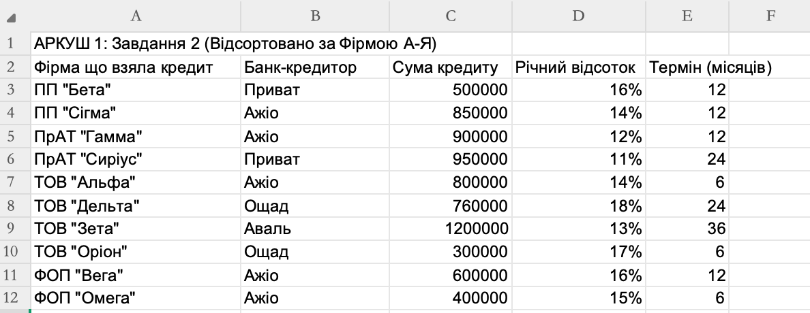
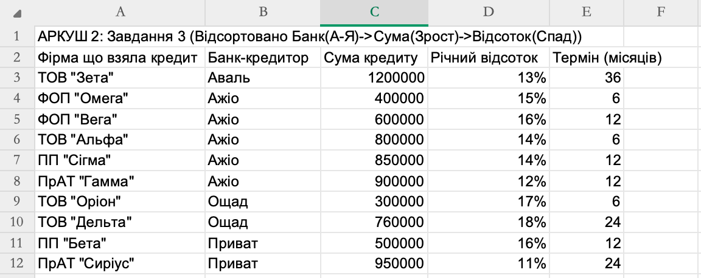
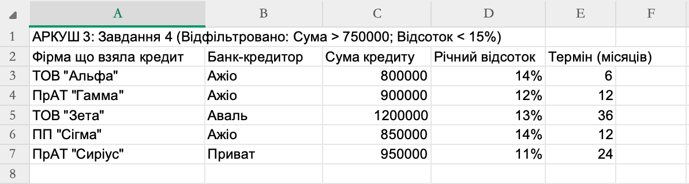
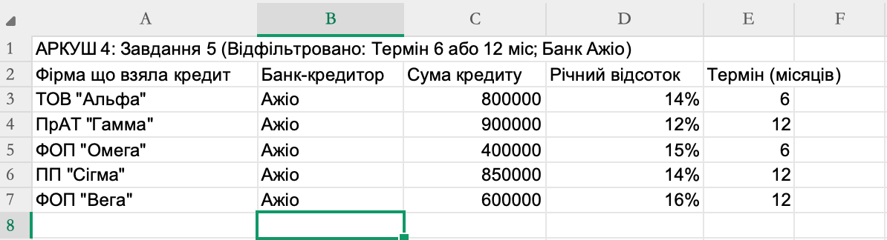
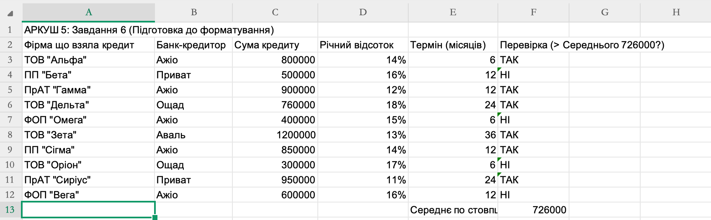

Сортування, фільтрація та умовне форматування для аналізу кредитних договорів
Ця практична робота присвячена інструментам вибирання даних у табличному процесорі. Ви навчитеся впорядковувати записи за одним або кількома критеріями, відбирати рядки, що задовольняють задані умови, та застосовувати умовне форматування для швидкого візуального аналізу. Усі завдання виконуються на прикладі бази даних кредитних договорів, яка містить інформацію про фірми-позичальники, банки-кредитори, суми, відсоткові ставки та терміни кредитування.

Рис. 1. Таблицю відсортовано за полем «Фірма що взяла кредит» в алфавітному порядку.
На першому аркуші виконано просте сортування за текстовим полем. Дані впорядковано за назвою фірми-позичальника від А до Я. Для цього виділено весь діапазон даних (включно із заголовками) та використано команду «Сортувати від А до Я». Табличний процесор автоматично розпізнав наявність заголовків і не включив їх у сортування. У результаті всі записи, що стосуються одного підприємства, розташовані послідовно, що полегшує пошук потрібної інформації.
Варто зауважити, що під час сортування текстових даних враховується алфавітний порядок української абетки, тому назви на кшталт «ТОВ "Альфа"» опиняються на початку списку, а «ФОП "Вега"» — ближче до кінця. Це базовий, проте надзвичайно важливий прийом для впорядкування великих масивів інформації.

Рис. 2. Спочатку дані згруповано за банком-кредитором, а в межах одного банку — за спаданням суми кредиту.
Другий аркуш ілюструє можливості багаторівневого сортування. Перший рівень — сортування за стовпцем «Банк-кредитор» від А до Я. Другий рівень — сортування за стовпцем «Сума кредиту» за спаданням (від найбільшої суми до найменшої). Такий підхід дає змогу, наприклад, швидко побачити найбільші кредити, видані кожним банком.
Для реалізації цього завдання викликано діалогове вікно «Сортування», де додано два рівні з відповідними параметрами. Оскільки діапазон містить заголовки, їх автоматично виключено з операції. У результаті всі договори з банком «Ажіо» опинилися на початку таблиці, причому найбільший кредит у цій групі (900 000 грн) розташований першим.

Рис. 3. Відображено лише ті кредити, сума яких більша за 700 000 грн, а річний відсоток менший за 15%.
На третьому аркуші застосовано числові фільтри одночасно до двох стовпців. Активовано автофільтр, після чого в стовпці «Сума кредиту» обрано умову «Більше…» і введено значення 700000. У стовпці «Річний відсоток» встановлено умову «Менше…» зі значенням 0,15 (тобто 15%). Обидва фільтри діють спільно — таблиця показує лише ті рядки, які задовольняють обидві вимоги водночас.
Цей інструмент дає змогу миттєво виокремити найвигідніші кредитні пропозиції: великі суми за помірної відсоткової ставки. У вибірку потрапили договори ТОВ «Альфа», ПрАТ «Гамма» та ТОВ «Зета».

Рис. 4. Відфільтровано договори банку «Ажіо» з терміном кредитування понад 6 місяців.
Четвертий аркуш демонструє поєднання текстового та числового фільтрів. У стовпці «Банк-кредитор» обрано лише значення «Ажіо» (за допомогою випадаючого списку зі знятими прапорцями). У стовпці «Термін (місяців)» встановлено умову «Більше…» і вказано число 6. Таким чином, таблиця показує тільки довгострокові (понад півроку) кредити, надані саме банком «Ажіо».
У результаті залишилися записи для ПрАТ «Гамма» (12 місяців), ПП «Сігма» (12 місяців) та ФОП «Вега» (12 місяців). Короткострокові кредити на 6 місяців (ТОВ «Альфа», ФОП «Омега») приховано. Фільтрація за кількома різнотипними полями — один із найпотужніших способів оперативного аналізу даних.

Рис. 5. Клітинки з річним відсотком 16% і більше автоматично підсвічено червоним кольором.
На п'ятому аркуші застосовано умовне форматування до стовпця «Річний відсоток». Правило форматування налаштовано так: «Значення клітинки» → «Більше або дорівнює» → 0,16. Для таких клітинок задано червоний колір заливки та білий жирний шрифт. Усі кредити з високою відсотковою ставкою (16% і вище) одразу впадають в око.
Цей прийом дозволяє без жодних фільтрів чи сортувань миттєво оцінити, які договори є найдорожчими для позичальника. У нашому прикладі це кредити ПП «Бета», ТОВ «Дельта», ТОВ «Оріон» та ФОП «Вега».
Умовне форматування можна налаштовувати за допомогою гістограм, колірних шкал або наборів значків, що робить аналіз даних ще більш наочним.
Під час виконання практичної роботи №9 було опановано:
Інструменти вибирання даних є незамінними під час роботи з великими масивами інформації. Вони дають змогу впорядкувати, відфільтрувати та наочно представити лише ті дані, які потрібні користувачеві в конкретний момент, що значно підвищує ефективність опрацювання електронних таблиць.